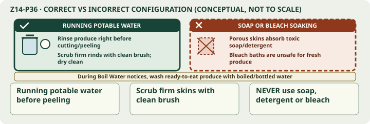

Z14-P36 · Food production and preservation · New manuscript
Wash fresh garden produce under running potable water—never soap or bleach
Remove soil, insects, and surface microbes from home-grown and purchased produce cleanly without introducing toxic chemical residues.
When it applies · Preparing all raw and cooked vegetables, fruits, melons, and herbs before eating or preserving.
Equipment · Confirmed running potable drinking water, clean dedicated produce scrub brush, and clean colander/towels.

Actions
- Rinse all fresh fruits and vegetables thoroughly under cool RUNNING potable water right before eating, cutting, or preserving—even melons, winter squash, and root crops you plan to peel, because a knife blade drags surface soil bacteria straight from the outer rind onto clean inner flesh.[P16]
- Scrub firm produce (potatoes, carrots, cucumbers, melons) gently with a clean produce brush under running water, discard damaged or bruised outer leaves of cabbage/lettuce, and dry gently with clean paper towels or a clean cloth towel.[P16]
- NEVER wash fruits or vegetables with dish soap, laundry detergent, commercial bleach, or unapproved chemical washes—porous plant skins absorb detergent and bleach residues that cause stomach poisoning.[P16]
Failure recognition · Soaking freshly picked strawberries and cucumbers in a sink of diluted dish soap or bleach water "to sanitize them."[P16]
Verify · Confirm cool running potable water used right before cutting/peeling, dedicated clean brush on firm skins, and zero soap or bleach applied.[P16, W29]
Stop or change course · During an active municipal Boil Water or Do Not Drink notice, wash ready-to-eat produce strictly with bottled or properly boiled-and-cooled safe water.[W29, W07]
Evidence and editorial notes
- P16 · USDA / FDA / CDC · Four Steps to Food Safety (current web edition)
- Section: Clean, Separate, Cook, Chill > Produce Washing and Cross-Contamination · Conditions: Garden-to-kitchen harvesting, food prep, and preservation workspaces
Support: Wash hands 20 seconds with soap and safe water, scrub firm produce under running safe water before peeling/cutting, keep raw animal foods strictly separate from ready-to-eat produce, and sanitize prep surfaces and utensils between tasks.
Limitations: Washing produce with soap, detergent, or bleach is unsafe and not recommended. · Conflicting evidence: None; extends F01–F03 into garden harvest and home preservation.
Editorial note: Anchors kitchen sanitation and cross-contamination barriers in Z14. · Specialist reviewer: Food safety and public health
Primary source · checked 2026-11-24
Current assessment · A04-P16 (2026-11-25) · Bounded support newly confirmed (A04): Verified handling sequence for food preparation using safe water. No advice here for a water emergency or decontaminating a specific product. Limits: Specialist review PENDING (Food safety and public health); publication HOLD. All release decisions pending. - W07 · CDC · Drinking Water Advisories: An Overview (current web edition)
- Section: Boil water; Do not drink; Do not use · Conditions: Public-water system advisories
Support: The notice determines safe activities. Use another source for do-not-drink notices. Do not use tap water for any purpose under a do-not-use notice unless authorities direct otherwise.
Limitations: Local utility directives supersede general field summaries. · Conflicting evidence: None; exact advisory category is authoritative.
Editorial note: Distinguishes boil-water, do-not-drink, and do-not-use actions explicitly. · Specialist reviewer: Drinking-water utility and public health
Primary source · checked 2026-11-24 - W29 · CDC · How to Make Water Safe in an Emergency (2024-09-19)
- Section: Use safe water for drinking, brushing teeth and food preparation · Conditions: Applicable emergency-water advice and permissible uses under active local advisory
Support: Use confirmed safe water for oral and food-contact tasks. Follow current local instructions for each use.
Limitations: Infant formula requires separate P26 conditions. Wound care requires the appropriate care source. · Conflicting evidence: See A02 claim audit for boundaries.
Editorial note: Separates potable-required tasks from non-potable utility uses. · Specialist reviewer: Public health and wilderness medicine
Primary source · checked 2026-11-24
Current assessment · A04-W29 (2026-11-25) · Bounded support newly confirmed (A04): Confirms safe water for oral and food-contact uses and the local-advisory boundary. Limits: Specialist review PENDING (Public health and wilderness medicine); publication HOLD. All release decisions pending.
Source lineage · USDA/FDA/CDC FoodSafety.gov; new manuscript · Classification · New manuscript.